Time-Domain Simulation of a Wind Turbine Blade
This example is also available as a Jupyter notebook: wind-turbine-blade.ipynb.
using GXBeam, LinearAlgebra
L = 60 # m
# create points
nelem = 10
x = range(0, L, length=nelem+1)
y = zero(x)
z = zero(x)
points = [[x[i],y[i],z[i]] for i = 1:length(x)]
# index of endpoints of each beam element
start = 1:nelem
stop = 2:nelem+1
# stiffness matrix for each beam element
stiffness = fill(
[2.389e9 1.524e6 6.734e6 -3.382e7 -2.627e7 -4.736e8
1.524e6 4.334e8 -3.741e6 -2.935e5 1.527e7 3.835e5
6.734e6 -3.741e6 2.743e7 -4.592e5 -6.869e5 -4.742e6
-3.382e7 -2.935e5 -4.592e5 2.167e7 -6.279e5 1.430e6
-2.627e7 1.527e7 -6.869e5 -6.279e5 1.970e7 1.209e7
-4.736e8 3.835e5 -4.742e6 1.430e6 1.209e7 4.406e8],
nelem)
# mass matrix for each beam element
mass = fill(
[258.053 0.0 0.0 0.0 7.07839 -71.6871
0.0 258.053 0.0 -7.07839 0.0 0.0
0.0 0.0 258.053 71.6871 0.0 0.0
0.0 -7.07839 71.6871 48.59 0.0 0.0
7.07839 0.0 0.0 0.0 2.172 0.0
-71.6871 0.0 0.0 0.0 0.0 46.418],
nelem)
# create assembly of interconnected nonlinear beams
assembly = Assembly(points, start, stop; stiffness=stiffness, mass=mass)
# prescribed conditions
prescribed_conditions = (t) -> begin
Dict(
# fixed left side
1 => PrescribedConditions(ux=0, uy=0, uz=0, theta_x=0, theta_y=0, theta_z=0),
# force on right side
nelem+1 => PrescribedConditions(Fz = 1e5*sin(20*t))
)
end
# simulation time
t = 0:0.001:2.0
system, history, converged = time_domain_analysis(assembly, t;
prescribed_conditions = prescribed_conditions)We can visualize tip displacements and the resultant forces in the root by accessing the post-processed results for each time step contained in the variable history. Note that the root resultant forces for this case are equal to the external forces/moments, but with opposite sign.
using Plots
pyplot()
point = vcat(fill(nelem+1, 6), fill(1, 6))
field = [:u, :u, :u, :theta, :theta, :theta, :F, :F, :F, :M, :M, :M]
direction = [1, 2, 3, 1, 2, 3, 1, 2, 3, 1, 2, 3]
ylabel = ["\$u_x\$ (\$m\$)", "\$u_y\$ (\$m\$)", "\$u_z\$ (\$m\$)",
"Rodriguez Parameter \$\\theta_x\$ (degree)",
"Rodriguez Parameter \$\\theta_y\$ (degree)",
"Rodriguez Parameter \$\\theta_z\$ (degree)",
"\$F_x\$ (\$N\$)", "\$F_y\$ (\$N\$)", "\$F_z\$ (\$N\$)",
"\$M_x\$ (\$Nm\$)", "\$M_y\$ (\$Nm\$)", "\$M_z\$ (\$N\$)"]
for i = 1:12
local y
plot(
xlim = (0, 2.0),
xticks = 0:0.5:2.0,
xlabel = "Time (s)",
ylabel = ylabel[i],
grid = false,
overwrite_figure=false
)
y = [getproperty(state.points[point[i]], field[i])[direction[i]]
for state in history]
if field[i] == :theta
# convert to Rodriguez parameter
@. y = 4*atan(y/4)
# convert to degrees
@. y = rad2deg(y)
end
if field[i] == :F || field[i] == :M
y = -y
end
plot!(t, y, label="")
plot!(show=true)
end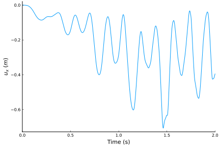 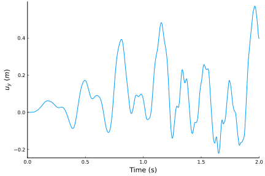 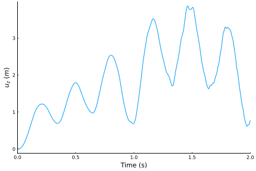 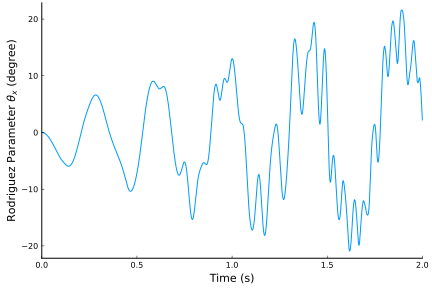 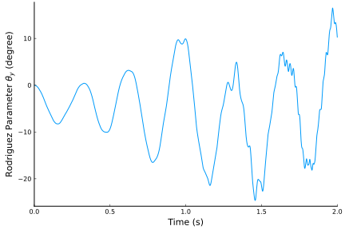 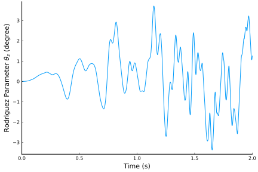 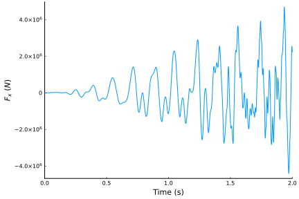  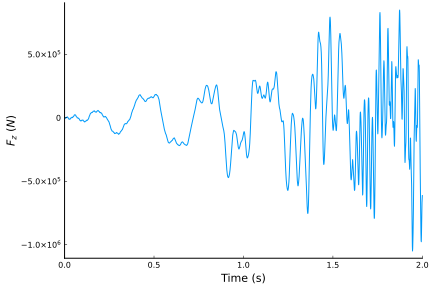 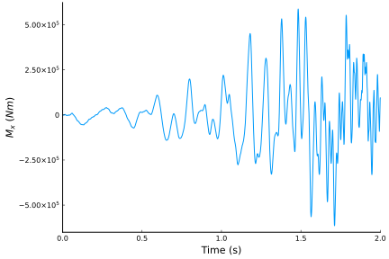 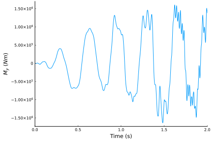 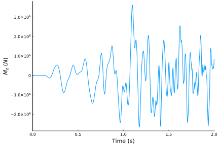
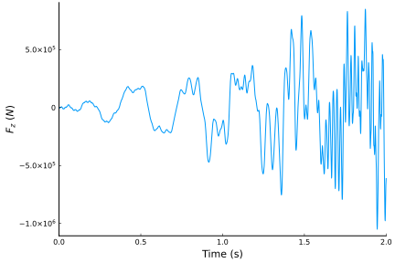 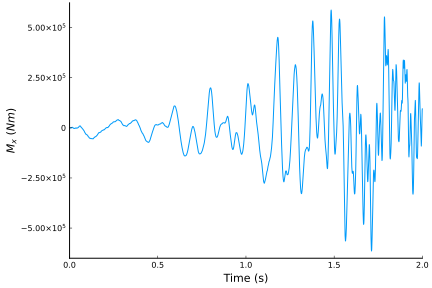 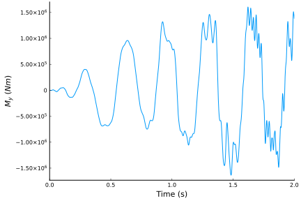 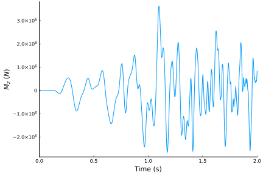
These plots are identical to those presented by Qi Wang, Wenbin Yu, and Michael A. Sprague in "Geometric Nonlinear Analysis of Composite Beams Using Wiener-Milenkovic Parameters".
We can also visualize the time history of the system using ParaView.
root_chord = 1.9000
tip_chord = 0.4540
airfoil = [ # MH-104
1.00000000 0.00000000;
0.99619582 0.00017047;
0.98515158 0.00100213;
0.96764209 0.00285474;
0.94421447 0.00556001;
0.91510964 0.00906779;
0.88074158 0.01357364;
0.84177999 0.01916802;
0.79894110 0.02580144;
0.75297076 0.03334313;
0.70461763 0.04158593;
0.65461515 0.05026338;
0.60366461 0.05906756;
0.55242353 0.06766426;
0.50149950 0.07571157;
0.45144530 0.08287416;
0.40276150 0.08882939;
0.35589801 0.09329359;
0.31131449 0.09592864;
0.26917194 0.09626763;
0.22927064 0.09424396;
0.19167283 0.09023579;
0.15672257 0.08451656;
0.12469599 0.07727756;
0.09585870 0.06875796;
0.07046974 0.05918984;
0.04874337 0.04880096;
0.03081405 0.03786904;
0.01681379 0.02676332;
0.00687971 0.01592385;
0.00143518 0.00647946;
0.00053606 0.00370956;
0.00006572 0.00112514;
0.00001249 -0.00046881;
0.00023032 -0.00191488;
0.00079945 -0.00329201;
0.00170287 -0.00470585;
0.00354717 -0.00688469;
0.00592084 -0.00912202;
0.01810144 -0.01720842;
0.03471169 -0.02488211;
0.05589286 -0.03226730;
0.08132751 -0.03908459;
0.11073805 -0.04503763;
0.14391397 -0.04986836;
0.18067874 -0.05338180;
0.22089879 -0.05551392;
0.26433734 -0.05636585;
0.31062190 -0.05605816;
0.35933893 -0.05472399;
0.40999990 -0.05254383;
0.46204424 -0.04969990;
0.51483073 -0.04637175;
0.56767889 -0.04264894;
0.61998250 -0.03859653;
0.67114514 -0.03433153;
0.72054815 -0.02996944;
0.76758733 -0.02560890;
0.81168064 -0.02134397;
0.85227225 -0.01726049;
0.88883823 -0.01343567;
0.92088961 -0.00993849;
0.94797259 -0.00679919;
0.96977487 -0.00402321;
0.98607009 -0.00180118;
0.99640466 -0.00044469;
1.00000000 0.00000000;
]
sections = zeros(3, size(airfoil, 1), length(points))
for ip = 1:length(points)
chord = root_chord * (1 - x[ip]/L) + tip_chord * x[ip]/L
sections[1, :, ip] .= 0
sections[2, :, ip] .= chord .* (airfoil[:,1] .- 0.5)
sections[3, :, ip] .= chord .* airfoil[:,2]
end
write_vtk("wind-turbine-blade-simulation", assembly, history, t; sections = sections)
This page was generated using Literate.jl.